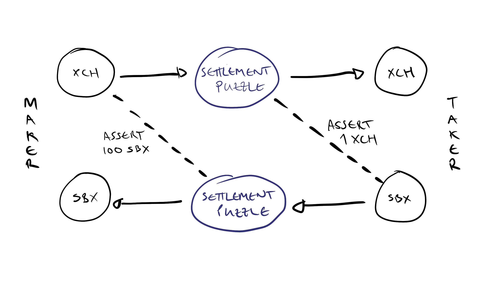

Offers
This article attempts to provide a detailed explanation of how offers work. We start with the underlying primitives of coins, coin spends, and spend bundles, and then look at the chialisp for the settlement puzzle which makes offers possible.
Coin
A coin consists of three pieces of information: Anyone can try to spend any coin - the puzzle which controls the coin will determine whether a signature is required. If the puzzle doesn't include a signature condition then anyone who knows the puzzle can spend the coin.
parent_coin_id- the parent coin that created itpuzzle_hash- the hash of the program that controls the coinamount- the number of mojos the coin controls
To spend a coin, we have to know the puzzle (program) that equates to the puzzle hash. The output of the program is a set of conditions which create new coins, ask for signatures, check timelocks etc.
CoinSpend
A coin spend is the set of information needed to spend a coin:
coin: The coin that's being spent,[parent_coin_id, puzzle_hash, amount]puzzle_reveal: The program which matches the coin's puzzle_hashsolution: Another program that is fed into the puzzle_reveal to provide the input data the program needs to execute
Puzzles don't necessarily have to have a solution, but typically we will pass conditions into the solution that tell the puzzle where they are sending some amount to, and to make assertions or create signatures. See the chialisp condition codes for more info
When we try to spend a coin, the node looks at the puzzle_reveal and calculates its treehash, then checks that this treehash equals the puzzle hash of the coin we're attempting to spend.
SpendBundles
A SpendBundle consists of:
- A list of CoinSpends (ie a coin, its puzzle, and its solution)
- A Signature which approves all the coin spends
The SpendBundle object can be written out as a series of bytes - basically just a big string, and when it gets sent to a full node, the mempool manager reads it, checks it is valid, and either submits it into mempool or returns an error code.
Anyone can send any spend bundle to the node for checking and inclusion into mempool. If I create a signed spend bundle for some xch in my wallet, and send the byte string of the spend bundle to you, you are able to submit the spend on your full node. The good thing about signatures is, you can't modify the solution without breaking the signature.
Aggregation
A useful feature of spend bundles is that they can be aggregated. If you have a set of several spend bundles, you can join them together, even if the coin spends have different signatures they can all be joined together.
Methods
The spendbundle object provides two methods which define what happens to the coins used in its coin spends: additions and removals.
SpendBundle.additions()tells us what coins are being createdSpendBundle.removals()tells use what coins are being destroyed
It calculates these two sets by running the puzzle and solution and looking at the CREATE_COIN conditions that are produced (additions), and which coins are included in the coinspend object (removals)
How Offers Work
The basic premise of offers is that I send you a signed spend bundle which spends the coins I want to sell. I publish that spend bundle somewhere, so you can copy it. You then create a spendbundle of the coins I want to buy, and aggregate that with the spend bundle I published. When you submit the complete spend bundle to the node, it checks the spend bundles and if they are all correct, then the spend executes and we make a successful trade.
When I create my spend bundle I don't know who is going to accept it, so I don't know the address where my coins should go. I also have to be sure that you're sending me the right coins and amount in return. To solve these problems we use an intermediate puzzle called the settlement puzzle, and use announcements to check that each party is receiving the right coins.

Figure 1: Outline of the Maker and Taker spends with announcements
When the maker creates an offer, they are spending some amount of an asset to the settlement puzzle, which creates a new settlement coin. The maker includes an ASSERT_PUZZLE_ANNOUNCEMENT conditon in their solution, which asserts the payment they want to receive in exchange for the amount they are offering. This means that their spend can only succeed if there is a matching announcement from a settlement puzzle. The settlement puzzle itself calculates this announcements so there is no way for it to be manipulated.
To accept the offer, the taker creates a spend of the requested asset to the settlement puzzle, including an appropriate announcement to match the one coming from the maker's settlement puzzle.
Example of an XCH to SBX offer
Lets assume the offer maker wants to create an offer where they will pay 1 XCH in return for 100 SBX (spacebucks CAT). So they will find a regular XCH coin in their wallet which will make up their part of the trade. They'll also get a puzzlehash where they can receive the SBX.
The maker then creates a solution for their XCH coin which produces the following conditions:
CREATE_COIN settlement_puzzle_hash 100000000000
ASSERT_PUZZLE_ANNOUNCEMENT (sha256tree SBX_puzzle_hash 100)
So they're creating a coin with the settlement puzhash, and amount of 1 XCH, and they're asserting that there will be a spend of a settlement puzzle that sends 100 SBX to their provided SBX_puzzle_hash.
They can put this spend bundle into an offer file and send it over to the taker.
The taker can inspect the spend bundle and look at its additions to see that it will create a settlement coin denominated in XCH. They also know that there's an announcement of 100 SBX to the makers SBX_puzzle_hash. So they go ahead and find an SBX coin with amount 100. They then create a spend bundle which sends the 100 SBX to settlement_puzzle_hash.
Because SBX is a cat, the settlement puzzle gets wrapped by the cat outer layer - but we don't have to worry about that for now.
The taker then has two spend bundles: one from the maker which creates the XCH settlement, and their own which creates the SBX settlement.
The XCH settlement coin can only be created if the SBX settlement produces a CREATE_PUZZLE_ANNOUNCEMENT that it's sending 100 SBX to the maker. The taker also requires that there is a CREATE_PUZZLE_ANNOUNCEMENT from a settlement puzzle that the 1 XCH is being spent to the taker's XCH puzzlehash.
The taker then creates the spends of the two settlement coins: For the first settlement (of XCH) they submit a notarized payment of 100 SBX to the maker's SBX_puzzle_hash. The second settlement of SBX, they include a notarized payment of 1 XCH to their own puzzle hash.
With these 4 coin spends (the maker's XCH spend, the XCH settlement, the taker's SBX spend and the SBX settlement) we now have a complete offer. The maker's XCH goes to the XCH settlement which in turn goes to the taker's XCH puzzle hash. The taker's SBX spend goes to the SBX settlement which in turn goes to the maker's SBX puzzle hash. And there are two announcements: one that the maker is receiving 100 SBX, and another that the taker is receiving 1 XCH.
Any attempt by the taker to screw with the amount or the puzzle hash where the sbx are going will cause the announcnments to fail. Similarly, if they try to spend a different asset, then the cat layer of the settlement puzzle will mean there is an incorrect puzzle hash creating the announcement.
Exploring the Code
(mod notarized_payments
;; `notarized_payments` is a list of notarized coin payments
;; a notarized coin payment is `(nonce . ((puzzle_hash amount ...) (puzzle_hash amount ...) ...))`
;; Each notarized coin payment creates some `(CREATE_COIN puzzle_hash amount ...)` payments
;; and a `(CREATE_PUZZLE_ANNOUNCEMENT (sha256tree notarized_coin_payment))` announcement
;; The idea is the other side of this trade requires observing the announcement from a
;; `settlement_payments` puzzle hash as a condition of one or more coin spends.
(include condition_codes.clvm)
(include utility_macros.clib)
(defun sha256tree (TREE)
(if (l TREE)
(sha256 2 (sha256tree (f TREE)) (sha256tree (r TREE)))
(sha256 1 TREE)
)
)
(defun create_coins_for_payment (payment_params so_far)
(if payment_params
(assert (> (f (r (f payment_params))) 0) ; assert the amount is positive
; then
(c (c CREATE_COIN (f payment_params)) (create_coins_for_payment (r payment_params) so_far))
)
so_far
)
)
(defun-inline create_announcement_for_payment (notarized_payment)
(list CREATE_PUZZLE_ANNOUNCEMENT
(sha256tree notarized_payment))
)
(defun-inline augment_condition_list (notarized_payment so_far)
(c
(create_announcement_for_payment notarized_payment)
(create_coins_for_payment (r notarized_payment) so_far)
)
)
(defun construct_condition_list (notarized_payments)
(if notarized_payments
(augment_condition_list (f notarized_payments) (construct_condition_list (r notarized_payments)))
()
)
)
(construct_condition_list notarized_payments)
)
We'll start by looking at the first dozen or so lines of settlement_payments.clsp. The most important thing here is the input to our mod, namely notarized_payments. From the docstring following this, we can see that a notarized payment is a tuple of a puzzle_hash and an amount. There is also a nonce, which is the hash of the coins going into the spend, but we don't need to worry about that for now.
So what is a notarized payment in this context? It's essentially the thing we're expecting the counter party to do - the payment that we want them to make in order to complete their side of the trade. It's notarized in the sense that it gets signed by the counter-party.
The rest of this code block just imports some library code and defines a function to creeate a tree-hash which is just a way of creating a hash of a tree (or list) of data.
Now we'll jump to the bottom of the file where we see (construct_condition_list notarized_payments). This says we should run the construct_condition_list function, using our notarized_payments variable as input.
(defun construct_condition_list (notarized_payments)
(if notarized_payments
(augment_condition_list (f notarized_payments) (construct_condition_list (r notarized_payments)))
()
)
)
This is a recursive function which takes each element of the list of notarized payments, and passes it to another function: augment_condition_list. It then recurs on the remaining elements of notarized_payments.
The augment_condition_list function is responsible for creating the conditions that this puzzle outputs:
(defun-inline augment_condition_list (notarized_payment so_far)
(c
(create_announcement_for_payment notarized_payment)
(create_coins_for_payment (r notarized_payment) so_far)
)
)
It takes in a single notarized payment, and creates a cons of two other functions: create_announcement_for_payment and create_coins_for_payment
These two functions produce the conditions that the settlement puzzle returns:
create_announcement_for_puzzle creates a puzzle announcement of the hash of the notarized payment, i.e. the puzzle hash and amount:
(defun-inline create_announcement_for_payment (notarized_payment)
(list CREATE_PUZZLE_ANNOUNCEMENT
(sha256tree notarized_payment))
)
create_announcement_for_payment produces the CREATE_COIN condition using the puzzle hash and amount from the notarized payment.
(defun create_coins_for_payment (payment_params so_far)
(if payment_params
(assert (> (f (r (f payment_params))) 0) ; assert the amount is positive
; then
(c (c CREATE_COIN (f payment_params)) (create_coins_for_payment (r payment_params) so_far))
)
so_far
)
)